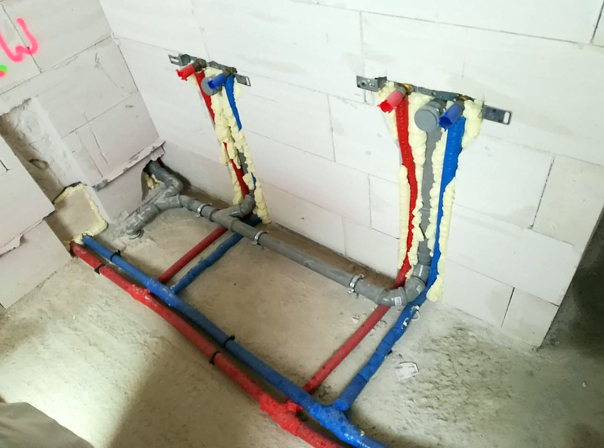
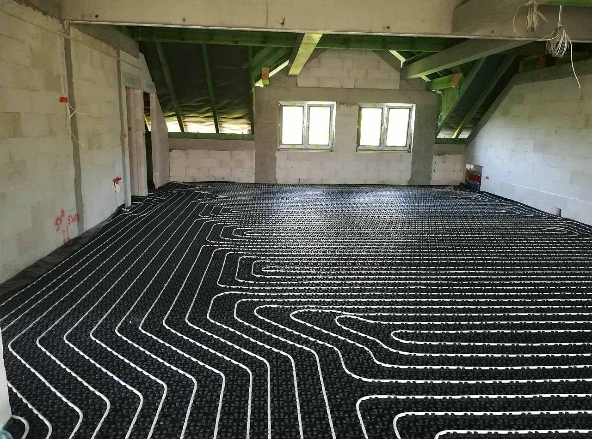
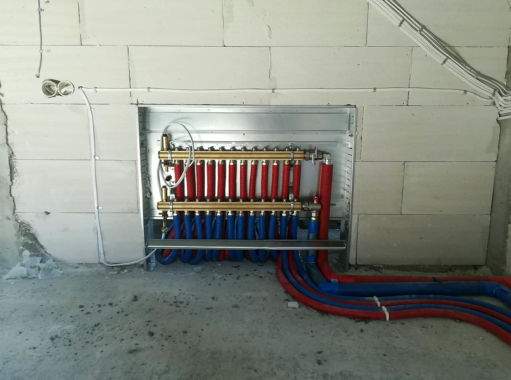
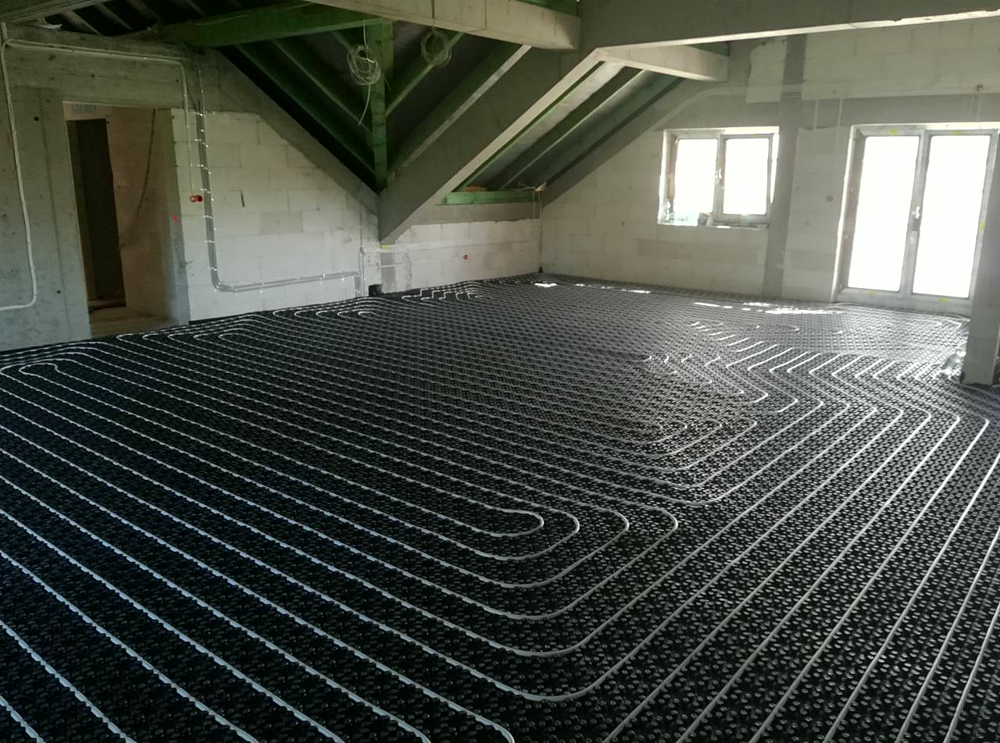

Co robimy

Awarie i przecieki
Woda leje się tam, gdzie nie powinna? Zakręć główny zawór i dzwoń. Przyjeżdżamy z narzędziami i częściami na większość przypadków, znajdujemy przyczynę i naprawiamy to, co faktycznie puściło - nie zaklejamy objawów. Zanim wyjdziemy, sprawdzamy, czy jest sucho. Dopiero wtedy koniec roboty.

Udrażnianie rur i kanalizacji
Zatkany zlew, brodzik albo WC to zwykle robota na jedną wizytę. Sprawdzamy, gdzie siedzi zator, i dobieramy narzędzie do rury, a nie odwrotnie - czasem wystarczy rozebrać i wyczyścić syfon. Jak zator wraca co miesiąc, szukamy przyczyny głębiej, zamiast przepychać w kółko.

Wymiana i montaż kotłów
Stary kocioł bierze coraz więcej gazu albo wysiada w największy mróz? Wymieniamy kotły na kondensacyjne i podłączamy je tak, żeby odbiór przeszedł bez poprawek. Doradzimy model, który ma sens przy Twoim metrażu - a nie ten, na którym najwięcej się zarabia.

Instalacje wod-kan
Budujesz dom albo robisz generalny remont? Rozprowadzamy wodę i kanalizację od podstaw: podejścia, piony i próba szczelności pod ciśnieniem, zanim cokolwiek zniknie pod płytkami. Z ekipą wykończeniową dogadujemy się sami, żeby glazurnik nie czekał na hydraulika. Ty dostajesz instalację, o której zapomnisz na lata.

Montaż łazienek
Remont łazienki stanął na ostatniej prostej? Robimy biały montaż od baterii po pralkę i sprawdzamy każde połączenie, zanim zamkniemy za sobą drzwi. Stare wyposażenie zabieramy od razu, chyba że chcesz je zatrzymać. Termin ustawiamy tak, żeby nie blokować innych ekip.

Centralne ogrzewanie i grzejniki
Rozprowadzamy centralne ogrzewanie w nowych domach i wymieniamy stare piony w remontowanych. Grzejniki dobieramy do kubatury pomieszczenia z tabel, nie z przyzwyczajenia - za mały nie dogrzeje, za duży przepali. Na koniec równoważymy instalację, żeby ostatni grzejnik na pionie grzał tak samo jak pierwszy.
Która z usług Cię interesuje?
Napisz, co chcesz zrobić - odpowiemy z propozycją i wyceną.